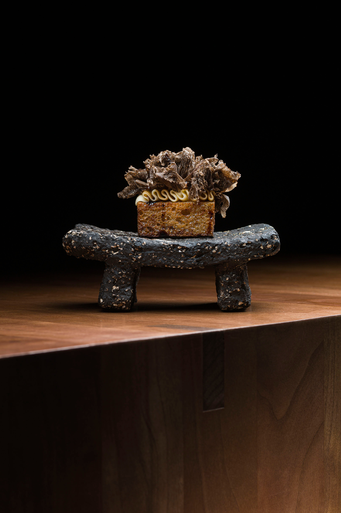

The Place
Inspired by India in every aspect – from our silk wallpapers to our stately, fort-inspired door, celebrated designers Matthew and Paul of MSDO have artfully composed five uniquely Indian spaces within FoodStuffs. Drawing on décor that wends masterfully through the depths of the subcontinent, each visit to FoodStuffs promises a new adventure.
FoodStuff is an experience, not just a meal

The Food
Blending a culinary philosophy that pays tribute to India’s rich legacy, culinary historian Pritha Sen and Executive Chef Pinaki Ray create an extensive menu offering both vegetarian and non-vegetarian dishes. Featuring niche ingredients sourced across the Subcontinent and South East Asia, a poetic and irreverent experience awaits.

The People
People passionate about Indian cuisine.A celebrated revivalist of rare and bygone recipes.